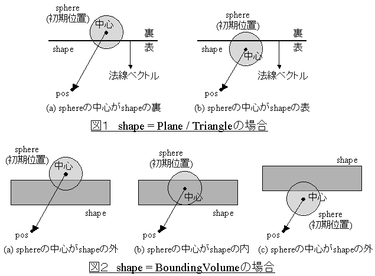

com.nttdocomo.ui.graphics3d.collision.Collision
com.nttdocomo.ui.graphics3d.collision.Collision
|
||||||||||
| 前のクラス 次のクラス | フレームあり フレームなし | |||||||||
| 概要: 入れ子 | フィールド | コンストラクタ | メソッド | 詳細: フィールド | コンストラクタ | メソッド | |||||||||
Object
衝突判定を行うクラスです。
同様の衝突判定機能に、DrawableObject3DクラスのisCrossメソッドがありますが、これはポリゴン
を使って正確に衝突判定を行うメソッドであり、判定の精度を重視したメソッドです。
一方、このクラスで提供するisHitメソッドは、単純な形状同士の衝突判定を行うAPIで、判定の精度
よりもパフォーマンスを重視した判定機能であり、isCrossメソッドとは性質が異なります。
パフォーマンスを重視するコンテンツでは、このクラスの機能を使用されることを推奨します。
このクラスには次の機能があります。
Rayの交点情報を取得する(isPickedメソッド)
RayとFigureのPick判定
Shape−Point、Line(Ray)、Plane、Triangle、Box、Capsule、Cylinder、Sphere、AABBox、AABCapsule、AABCylinder
isHitメソッド、isPickedメソッドにおいて、Hitした時、Pickした時に通知が必要な場合(引数notifyが
trueの場合)は、CollisionObserverインターフェースを実現したクラスのオブジェクトを、
setObserverメソッドで設定しておく必要があります。
CollisionObserverの各メソッドの呼び出しは、isHitメソッド、isPickedメソッド内部で
同期的に呼び出されます。
一次変換等の計算の結果、形状のいずれかの長さが0になって形状の次元数がさがる (例えば、LineがPointになる、SphereがPointになる等)場合の各メソッド (getDistance、getIntersection、isHit)の結果は保証されません。
以下にサンプルコードを示します。
public class sampleClass {
public static void main(String[] args) {
Figure fig = Figure.createInstance(....); // 何らかの3Dモデルをロードする
Collision collision = new Collision();
CollisionObserver co = new UserCollisionObserver();
collision.setObserver(co);
// 任意のBox作成
Box box0 = new Box(new Vector3D(10,10,10));
Box box1 = new Box(new Vector3D(10,10,10));
// Boxをワールド座標系にセット
box0.setTransform(null); // 恒等変換(設定しなくてもデフォルトは単位行列)
Transform trans = new Transform();
trans.translate(5, 20, 20);
box1.setTransform(trans); // 平行移動行列をセット
// Figureから、ボーンにBoundingVolumeオブジェクトが付加されていないBVFigureを生成
BVFigure bvFig = BVBuilder.createBVFigure(fig);
// Figure全体を包む球を生成
Sphere sphere = (Sphere)BVBuilder.createBV(fig, 0, Shape.TYPE_SPHERE, 1.0f);
// BVFigureに、Figure全体のBoundingVolumeをセット
bvFig.setBV(sphere);
// BVFigureをワールド座標系にセット
trans.setIdentity();
trans.translate(5, 20, 20);
bvFig.setTransform(trans); // 平行移動行列をセット
// パターン1. Box同士の衝突判定
// 衝突判定のみ処理(isHitの第3引数をfalseにする)
// （衝突しても、UserCollisionObserver.onHit()は呼ばれない）
if (collision.isHit(box0, box1, false)) {
// 衝突した場合の処理
} else {
// 衝突してない場合の処理
}
// パターン2. BoxとBVFigure(Figure全体のBoundingVolumeについて)の衝突判定
// 衝突判定時の情報を取得し複雑な処理を行いたい場合(isHitの第4引数をtrueにする)
// （衝突した場合、UserCollisionObserver.onHit()が呼ばれる）
if (collision.isHit(box0, bvFig, false, true)) {
// 衝突した場合の処理
} else {
// 衝突してない場合の処理
}
}
// 衝突判定時の情報を取得し,任意の処理を行う
static class UserCollisionObserver implements CollisionObserver {
public void onHit(Shape shape0, Shape shape1, boolean isInvolved, Vector3D point) {
// 使用しないため空実装
}
public boolean onHit(Shape shape, int boneId0, BoundingVolume[] bv, int[] boneId1,
boolean[] isInvolved, Vector3D[] point) {
// パターン2での衝突時,この処理が呼ばれる。
// bvFigには、Figure全体のBoundingVolumeしかセットしていないため、この処理
// が呼ばれる場合は、boneId1[0]=BVFigure.ID_WHOLE_FIGUREとなる。
//
// ユーザ任意の処理
//
return false; // 1回しか呼ばれないので、trueを返しても同じ
}
public void onHit(Shape shape, Sphere sphere, float contactPos,
Vector3D normal, float distance) {
// 使用しないため空実装
}
public void onPick(Ray ray, Figure fig, IntersectionAttribute[] attr) {
// 使用しないため空実装
}
}
}
| コンストラクタの概要 | |
Collision()
Collisionオブジェクトを生成します。 |
|
| メソッドの概要 | |
static float |
getDistance(Line line0,
Line line1)
Line(Ray)とLine(Ray)の最短距離を求めます。
|
static float |
getDistance(Point point,
Shape shape)
PointとShapeとの最短距離を求めます。
|
static float |
getDistance(Sphere sphere0,
Sphere sphere1)
SphereとSphereの最短距離を求めます。
|
static Vector3D |
getIntersection(Ray ray,
Shape shape)
RayとShapeとの交点を求めます。
|
boolean |
isHit(BVFigure bvFig0,
BVFigure bvFig1,
boolean isAllHit0,
boolean isAllHit1,
boolean notify)
BVFigureとBVFigureの衝突判定をします。
|
boolean |
isHit(Shape shape,
BVFigure bvFig,
boolean isAllHit,
boolean notify)
ShapeとBVFigureの衝突判定をします。
|
boolean |
isHit(Shape shape0,
Shape shape1,
boolean notify)
ShapeとShapeの衝突判定をします。
|
boolean |
isHit(Shape shape,
Sphere sphere,
Vector3D pos,
boolean notify)
ShapeとSphereの軌跡との衝突判定をします。
|
boolean |
isPicked(Ray ray,
Figure fig,
Transform trans,
boolean isAllPicked,
boolean notify)
RayとFigureの交点情報を取得します。
|
void |
setObserver(CollisionObserver co)
CollisionObserverを設定します。
|
| クラス Object から継承したメソッド |
equals, getClass, hashCode, notify, notifyAll, toString, wait, wait, wait |
| コンストラクタの詳細 |
public Collision()
Collisionオブジェクトを生成します。
| メソッドの詳細 |
public void setObserver(CollisionObserver co)
CollisionObserverを設定します。
isHitメソッド、isPickedメソッドにおいて、Hitした時、Pickした時に通知が必要な場合、
CollisionObserverインターフェースを実現したクラスのオブジェクトを、このメソッドで
設定しておく必要があります。
co - CollisionObserverインターフェースを実現したクラスのオブジェクトを指定します。
nullの場合、設定されているCollisionObserverオブジェクトが解除されます。
未設定の状態でnullが指定された場合、何もしません。
public static float getDistance(Point point,
Shape shape)
point - Pointオブジェクトを指定します。shape - Shapeオブジェクトを指定します。
NullPointerException - 引数pointまたはshapeがnullの場合に発生します。
public static float getDistance(Line line0,
Line line1)
line0 - Lineオブジェクトを指定します。line1 - Lineオブジェクトを指定します。
NullPointerException - 引数line0またはline1がnullの場合に発生します。
public static float getDistance(Sphere sphere0,
Sphere sphere1)
sphere0 - Sphereオブジェクトを指定します。sphere1 - Sphereオブジェクトを指定します。
NullPointerException - 引数sphere0またはsphere1がnullの場合に発生します。
public static Vector3D getIntersection(Ray ray,
Shape shape)
shapeが、Plane、Triangle、BoundingVolumeの場合、これらのクラスの
setHittingFromBackFaceEnabledメソッドによる設定が有効となり、falseが設定されていて
rayが裏側から交差する場合は、交点がないと判定します。
ray - Rayオブジェクトを指定します。shape - Shapeオブジェクトを指定します。
NullPointerException - 引数rayまたはshapeがnullの場合に発生します。
IllegalArgumentException - 引数shapeが、Point、Line、Rayの場合に発生します。
public boolean isHit(Shape shape0,
Shape shape1,
boolean notify)
次の状態の場合、Hitしたと判定します。
BoundingVolumeオブジェクトで、この内部に他方のオブジェクトが内包される場合
shape0とshape1が、次の組合せの場合、Plane、Triangle、BoundingVolumeクラスのsetHittingFromBackFaceEnabledメソッドによる設定にしたがって衝突判定が行われます。(shape0とshape1が逆の組合せも含む)
shape0 shape1 Line(Ray)PlaneLine(Ray)TriangleLine(Ray)BoundingVolume
(Box、Capsule、Cylinder、Sphere、AABBox、AABCapsule、AABCylinder)
Hitした場合に呼ばれる、CollisionObserverのメソッドは次のメソッドです。
CollisionObserver.onHit(Shape shape0, Shape shape1, boolean isInvolved, Vector3D point)
※サポートされていない形状の組合せ(shape0とshape1が逆の組合せも含む)
shape0 shape1 PointBoundingVolume以外Line(Ray)Line(Ray)CylinderSphere以外のOBV
(Box、Capsule、Cylinder)CylinderAABBox、AABCapsuleAABCylinderSphere以外のOBV
(Box、Capsule、Cylinder)
shape0 - Shapeオブジェクトを指定します。shape1 - Shapeオブジェクトを指定します。notify - Hitした場合に、setObserverメソッドで設定されているCollisionObserver
オブジェクトに対して通知するかどうかを指定します。通知する場合はtrueを指定し、通知しない場合はfalseを指定します。
ただし,CollisionObserverオブジェクトが設定されていない場合は無視されます。
NullPointerException - 引数shape0またはshape1がnullの場合に発生します。
IllegalArgumentException - shape0、shape1が次の組合せの場合に発生します。(shape0とshape1が逆の組合せも含む)PointとBV以外Line(Ray)とLine(Ray)CylinderとSphere以外のOBV(Box、Capsule、Cylinder)CylinderとAABBoxCylinderとAABCapsuleAABCylinderとSphere以外のOBV(Box、Capsule、Cylinder)
RuntimeException - CollisionObserverが例外を投げた場合に発生します。
CollisionObserver.onHit(Shape shape0, Shape shape1, boolean isInvolved, Vector3D point)
public boolean isHit(Shape shape,
BVFigure bvFig,
boolean isAllHit,
boolean notify)
最初に、bvFigにセットされているFigure全体のBoundingVolumeについて衝突判定した後
(BoundingVolumeがセットされている場合)、
bvFigのボーンにセットされているBoundingVolumeについて衝突判定をします。
ただし、Figure全体のBoundingVolumeがセットされていて、かつ
isHittingEnabledが true の時に、Figure全体に対して
Hitしない場合は、引数isAllHitの値に関係なくボーン毎の判定は行いません。
次の状態の場合、Hitしたと判定します。
BoundingVolumeが交差する場合
BoundingVolumeに内包される場合
BoundingVolumeで、bvFigにセットされているBoundingVolumeを内包する場合
bvFigについては、BVFigureクラスのsetHittingEnabledメソッドによる設定にしたがって
衝突判定が行われます。
shapeとbvFigのBoundingVolumeが、次の組合せの場合、Plane、Triangle、BoundingVolumeクラスの
setHittingFromBackFaceEnabledメソッドによる設定にしたがって衝突判定が行われます。
shape bvFigのBoundingVolume Line(Ray)PlaneLine(Ray)TriangleLine(Ray)BoundingVolume
(Box、Capsule、Cylinder、Sphere)
Hitした場合に呼ばれる、CollisionObserverのメソッドは次のメソッドです。(1回だけ呼ばれます)
CollisionObserver.onHit(Shape shape, int boneId0, BoundingVolume[] bv, int[] boneId1, boolean[] isInvolved, Vector3D[] point)
※サポートされていない形状の組合せ(逆の組合せも含む)
shape bvFigの BoundingVolumeCylinderSphere以外のOBV
(Box、Capsule、Cylinder)CylinderAABBox、AABCapsuleAABCylinderSphere以外のOBV
(Box、Capsule、Cylinder)
引数isAllHitにより、次のような処理を行います。(notify=falseの場合は、isAllHit=falseの処理となります)
isAllHit=false shapeと、bvFigにセットされている BoundingVolumeと
順次衝突判定し、HitするBoundingVolumeが見つかった時点で処理を終了するisAllHit=true shapeと、bvFigにセットされているすべての BoundingVolumeと
衝突判定する。
shape - Shapeオブジェクトを指定します。bvFig - BVFigureオブジェクトを指定します。isAllHit - bvFigに登録されているすべてのBoundingVolumeに対して判定するかどうか。notify - Hitした場合に、setObserverメソッドで設定されているCollisionObserver
オブジェクトに対して通知するかどうかを指定します。通知する場合はtrueを指定し、通知しない場合はfalseを指定します。
ただし、CollisionObserverオブジェクトが設定されていない場合は無視されます。
BoundingVolumeが1つもセットされていない場合は、falseを返します。)
NullPointerException - 引数shapeまたはbvFigがnullの場合に発生します。
IllegalArgumentException - shape、bvFigのBoundingVolumeが次の組合せの場合に発生します。(逆の組合せも含む)CylinderとSphere以外のOBV(Box、Capsule、Cylinder)CylinderとAABBoxCylinderとAABCapsuleAABCylinderとSphere以外のOBV(Box、Capsule、Cylinder)RuntimeException - CollisionObserverが例外を投げた場合に発生します。
CollisionObserver.onHit(Shape shape, int boneId0, BoundingVolume[] bv, int[] boneId1, boolean[] isInvolved, Vector3D[] point)
public boolean isHit(BVFigure bvFig0,
BVFigure bvFig1,
boolean isAllHit0,
boolean isAllHit1,
boolean notify)
最初に、bvFig0にセットされているFigure全体のBoundingVolumeについて衝突判定した後
(BoundingVolumeがセットされている場合)、
bvFig0のボーンにセットされているBoundingVolumeについて衝突判定をします。
ただし、Figure全体のBoundingVolumeがセットされていて、かつ
isHittingEnabledが true の時に、Figure全体に対して
Hitしない場合は、引数isAllHit0の値に関係なくボーン毎の判定は行いません。
bvFig1についても同様です。
次の状態の場合、Hitしたと判定します。
BoundingVolumeとbvFig1にセットされている
BoundingVolumeが交差する場合
BoundingVolumeとbvFig1にセットされている
BoundingVolumeについて、片方が他方に内包される場合
bvFig0、bvFig1については、BVFigureクラスのsetHittingEnabledメソッドによる設定にしたがって
衝突判定が行われます。
Hitした場合に呼ばれる、CollisionObserverのメソッドは次のメソッドです。bvFig0にセット
されているBoundingVolumeごとの判定処理で、Hitする回数だけ呼ばれます。onHitメソッドがfalseを
返した場合、処理を終了します。
CollisionObserver.onHit(Shape shape, int boneId0, BoundingVolume[] bv, int[] boneId1, boolean[] isInvolved, Vector3D[] point)
※サポートされていない形状の組合せ(逆の組合せも含む)
bvFig0の BoundingVolumebvFig1の BoundingVolumeCylinderSphere以外のOBV
(Box、Capsule、Cylinder)CylinderAABBox、AABCapsuleAABCylinderSphere以外のOBV
(Box、Capsule、Cylinder)
引数isAllHit0、isAllHit1により、次のような処理を行います。(notify=falseの場合は、isAllHit0=false、isAllHit1=falseの処理となります)
isAllHit1=false isAllHit1=true isAllHit0=false bvFig0にセットされている各
BoundingVolumeについて、
bvFig1にセットされているBoundingVolumeと順次衝突判定し、HitするBoundingVolumeが
見つかった時点で、処理を終了する。bvFig0にセットされている各 BoundingVolumeについて、bvFig1にセット
されているBoundingVolumeと順次衝突判定し、HitするBoundingVolumeが見つかった場合、
bvFig1の残りのすべてのBoundingVolumeに対して衝突判定した後に処理を
終了する。isAllHit0=true bvFig0にセットされている
BoundingVolumeと、
bvFig1にセットされているBoundingVolumeと順次衝突判定し、HitするBoundingVolumeが
見つかった時点で、bvFig0の次のBoundingVolumeの処理に移る。
bvFig0の最後のBoundingVolumeまで処理を行う。bvFig0の各BoundingVolumeの処理でHitした場合、
onHitメソッドを1回コールするbvFig0のすべての BoundingVolumeと、bvFig1のすべてのBoundingVolume間の衝突判定を行う。
bvFig0の各BoundingVolumeの処理でHitした場合、onHitメソッドを1回コールする
bvFig0 - BVFigureオブジェクトを指定します。bvFig1 - BVFigureオブジェクトを指定します。isAllHit0 - bvFig0に登録されているすべてのBoundingVolumeに対して判定するかどうか。isAllHit1 - bvFig1に登録されているすべてのBoundingVolumeに対して判定するかどうか。notify - Hitした場合に、setObserverメソッドで設定されているCollisionObserver
オブジェクトに対して通知するかどうかを指定します。通知する場合はtrueを指定し、通知しない場合はfalseを指定します。
ただし、CollisionObserverオブジェクトが設定されていない場合は無視されます。
BoundingVolumeが1つもセットされていない場合は、falseを返します。)
NullPointerException - 引数bvFig0またはbvFig1がnullの場合に発生します。
IllegalArgumentException - bvFig0のBoundingVolume、bvFig1のBoundingVolumeが次の組合せの場合に発生します。(逆の組合せも含む)CylinderとSphere以外のOBV(Box、Capsule、Cylinder)CylinderとAABBoxCylinderとAABCapsuleAABCylinderとSphere以外のOBV(Box、Capsule、Cylinder)RuntimeException - CollisionObserverが例外を投げた場合に発生します。
CollisionObserver.onHit(Shape shape, int boneId0, BoundingVolume[] bv, int[] boneId1, boolean[] isInvolved, Vector3D[] point)
public boolean isHit(Shape shape,
Sphere sphere,
Vector3D pos,
boolean notify)
Sphereが引数posまで平行移動する軌跡とShapeとの衝突判定をします。
Sphereが引数posまで平行移動する軌跡はCapsuleを形成するので、引数notifyをfalseにして実行する
場合は、isHit(Shape shape0, Shape shape1, boolean notify)メソッドにおけるShapeとCapsuleの
衝突判定と同じ結果となります。
引数notifyがtrueの場合、呼び出されるCollisionObserverのメソッドが異なり、取得できるデータ
が異なります。
Plane、Triangle、BoundingVolumeの場合、setHittingFromBackFaceEnabledメソッドによる設定
にしたがって衝突判定が行われます。
isHittingFromBackFaceEnabledがfalseで、sphereが初期位置においてshapeと重なる
位置関係の場合、sphereの中心を始点としposを終点とするLineと、shapeとの
衝突判定結果を返します。したがって、図１、２の位置関係の場合、isHittingFromBackFaceEnabled
の値によって、衝突判定結果は次のようになります。
| isHittingFromBackFaceEnabled | 図1(a) | 図1(b) | 図2(a) | 図2(b) | 図2(c) |
|---|---|---|---|---|---|
| true | true | true | true | true | true |
| false | false | false | true | false | false |

Hitした場合に呼ばれる、CollisionObserverのメソッドは次のメソッドです。
CollisionObserver.onHit(Shape shape, Sphere sphere, float contactPos, Vector3D normal, float distance)
shape - Shapeオブジェクトを指定します。sphere - Sphereオブジェクトを指定します。pos - sphereの平行移動先の位置を指定します。notify - Hitした場合に、setObserverメソッドで設定されているCollisionObserver
オブジェクトに対して通知するかどうかを指定します。通知する場合はtrueを指定し、通知しない場合はfalseを指定します。
ただし、CollisionObserverオブジェクトが設定されていない場合は無視されます。
NullPointerException - 引数shape、sphere、posの１つ以上がnullの場合に発生します。
IllegalArgumentException - 引数shapeがCylinder、AABCylinderの場合に発生します。IllegalArgumentException - 引数posが引数sphereの中心と一致する場合に発生します。
RuntimeException - CollisionObserverが例外を投げた場合に発生します。
CollisionObserver.onHit(Shape shape, Sphere sphere, float contactPos, Vector3D normal, float distance),
図形サイズ・位置、ベクトル、行列設定値に関する注意事項
public boolean isPicked(Ray ray,
Figure fig,
Transform trans,
boolean isAllPicked,
boolean notify)
RayとFigureの交点情報を取得します。
FigureのポリゴンとRayが交差する場合、Pickしたと判定します。
Pickした場合に呼ばれる、CollisionObserverのメソッドは次のメソッドです。
CollisionObserver.onPick(Ray ray, Figure fig, IntersectionAttribute[] attr)
引数notifyがfalseの場合、交差するfigのポリゴンが見つかった時点で処理を終了します。
引数notifyがtrueの場合は、引数isAllPicked の値に関係なく、figのすべてのポリゴンに対して交差判定を 行います。この場合、onPickメソッドで取得できる情報が次のように異なります。
ポリゴン数が多い描画用のFigureを用いると処理に時間がかかりますので、通常は、Pick判定用の粗い ポリゴンで作成したFigureを用います。
ray - Rayオブジェクトを指定します。fig - Figureオブジェクトを指定します。trans - ワールド座標系に対して引数figのFigure座標系をセットする際の一次変換行列を
設定します。nullを設定すると単位行列として扱われ、Figure座標系がワールド座標系と一致します。
isAllPicked - Pickした場合に、すべてのPick情報を取得するか、最短距離のPick情報をするかどうかを指定します。すべてのPick情報を取得する場合はtrueを指定し、取得しない場合はfalseを指定します。
notify - Pickした場合に、setObserverメソッドで設定されているCollisionObserver
オブジェクトに対して通知するかどうかを指定します。通知する場合はtrueを指定し、通知しない場合はfalseを指定します。
ただし、CollisionObserverオブジェクトが設定されていない場合は無視されます。
NullPointerException - 引数rayまたはfigがnullの場合。
UIException - 引数figが既に dispose() されたオブジェクトの場合に発生します(ILLEGAL_STATE)。
IllegalArgumentException - 引数transの1〜3列の列ベクトルに零ベクトルがある場合に発生します。
RuntimeException - CollisionObserverが例外を投げた場合に発生します。
CollisionObserver.onPick(com.nttdocomo.ui.graphics3d.collision.Ray, com.nttdocomo.ui.graphics3d.Figure, com.nttdocomo.ui.graphics3d.collision.IntersectionAttribute[]),
図形サイズ・位置、ベクトル、行列設定値に関する注意事項
|
||||||||||
| 前のクラス 次のクラス | フレームあり フレームなし | |||||||||
| 概要: 入れ子 | フィールド | コンストラクタ | メソッド | 詳細: フィールド | コンストラクタ | メソッド | |||||||||
NTT DOCOMO,INC.
本製品または文書は著作権法により保護されており、その使用、複製、再頒布および逆コンパイルを制限するライセンスのもとにおいて頒布されます。NTTドコモ（その他に許諾者がある場合は当該許諾者も含めて）の書面による事前の許可なく、本製品および関連する文書のいかなる部分も、いかなる方法によっても複製することが禁じられます。フォントを含む第三者のソフトウェアは、著作権法により保護されており、その提供者からライセンスを受けているものです。
Sun、Sun Microsystems、Java、J2MEおよびJ2SEは、米国およびその他の国における米国 Sun Microsystems,Inc.の商標または登録商標です。サンのロゴマークは、米国 Sun Microsystems, Inc.の登録商標です。
FeliCaは、ソニー株式会社が開発した非接触ICカードの技術方式です。FeliCaは、ソニー株式会社の登録商標です。
「ｉモード」、「ｉアプリ／アイアプリ」、「ｉ-αppli」ロゴ、「DoJa」はNTTドコモの商標または登録商標です。
その他記載された会社名、製品名などは該当する各社の商標または登録商標です。